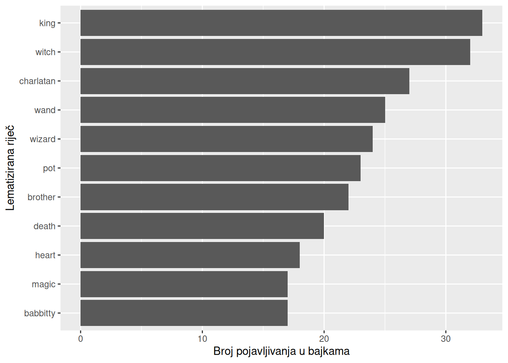
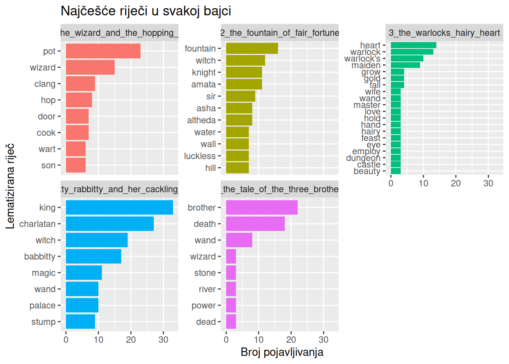
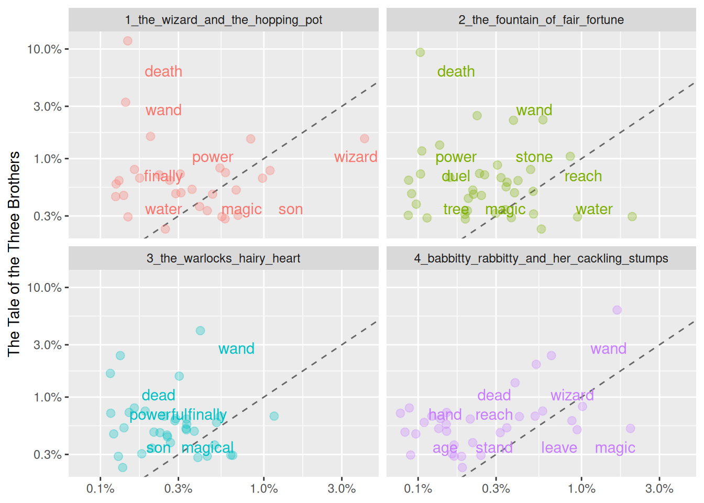

Tokenizacijom teksta, uklanjanjem zaustavnih riječi i lematizacijom ispunjene su temeljne pretpostavke za analizu teksta, koja se sada može provesti na dobivenom podatkovnom okviru. Sljedeći korak je jednostavna deskriptivna analiza teksta. Riječ je o najjednostavnijem obliku analize teksta, koji se svodi na brojanje riječi, izračun njihove relativne učestalosti i korelaciju učestalosti riječi među različitim tekstovima. Iako su informacije koje takva analiza daje razmjerno jednostavne, ona je važan početni korak u upoznavanju s tekstom i radu s njim.
8.1 Brojanje riječi
Najjednostavnija analiza teksta je brojanje koliko se puta pojedina riječ pojavljuje u tekstu. Takva se analiza provodi na tokenima, odnosno na riječima ili drugim jedinicama na koje je tekst podijeljen.
Pritom možemo brojati riječi u obliku u kojem se pojavljuju u tekstu ili njihove lematizirane oblike, odnosno rječničke oblike. Riječi u izvornom obliku bolje je brojati kad nas zanima kako je tekst napisan jer one čuvaju gramatičke oblike poput broja (jednina ili množina) ili glagolskog vremena. Tada su, primjerice, brother i brothers dvije različite riječi pa možemo vidjeti govori li tekst češće o jednom bratu ili o braći. Lematizirane je oblike bolje brojati kad nas zanima o čemu tekst govori jer se tada svi oblici iste riječi broje zajedno, odnosno, brother i brothers ubrajaju se u istu riječ, brother.
Brojanje se provodi funkcijom count() iz paketa dplyr. Argument sort = TRUE slaže rezultat od najčešće prema najrjeđoj riječi.
# Brojanje riječi u izvornom oblikutToBtB_word_tokens_stop_words_lemmatize |>count(word, sort =TRUE)
# A tibble: 1,247 × 2
word n
<chr> <int>
1 king 33
2 charlatan 27
3 pot 23
4 wizard 22
5 death 20
6 wand 20
7 witch 20
8 babbitty 17
9 heart 17
10 magic 17
# ℹ 1,237 more rows
Ispis prikazuje sve riječi koje se pojavljuju u bajkama, ukupno njih 1247 različitih, i koliko se puta svaka od njih pojavljuje. Najčešća je riječ king (33 pojavljivanja), a slijede charlatan (27), pot (23) i wizard (22). Riječi death, wand i witch pojavljuju se jednako često, po 20 puta. Već i ovakav jednostavan popis dobro odražava sadržaj knjige. Među najčešćim riječima nalaze se likovi i predmeti oko kojih se vrte pojedine bajke, poput lonca (pot) iz bajke The Wizard and the Hopping Pot ili imena Babbitty (17) iz bajke Babbitty Rabbitty and Her Cackling Stumps, te riječi poput magic, wizard i witch, koje upućuju na čarobni svijet u kojem se bajke odvijaju.
Ako brojimo lematizirane oblike, rezultat se mijenja.
# A tibble: 1,076 × 2
lemma n
<chr> <int>
1 king 33
2 witch 32
3 charlatan 27
4 wand 25
5 wizard 24
6 pot 23
7 brother 22
8 death 20
9 heart 18
10 babbitty 17
# ℹ 1,066 more rows
Brojanjem lema broj različitih riječi smanjio se s 1247 na 1076 jer su se različiti oblici iste riječi spojili u jednu lematiziranu. Promijenio se i redoslijed najčešćih riječi. Najviše se ističe riječ witch koja se kao lema pojavljuje 32 puta, dok se u izvornom obliku pojavljivala 20 puta. Slično tome, lema brother pojavljuje se 22 puta i nalazi se među deset najčešćih, iako riječ brother u izvornom obliku među njima nije bila. To znači da se znatan dio pojavljivanja tih riječi odnosi na njihove druge oblike, najčešće na množinu. Koji su to oblici, možemo provjeriti tako da funkcijom filter() iz paketa dplyr zadržimo samo retke s određenom lematiziranom riječju i zatim prebrojimo riječi u izvornom obliku.
# Oblici u kojima se pojavljuje lematizirana riječ "brother"tToBtB_word_tokens_stop_words_lemmatize |>filter(lemma =="brother") |>count(word, sort =TRUE)
# A tibble: 2 × 2
word n
<chr> <int>
1 brother 15
2 brothers 7
Ovakvi su ispisi korisni za rad, ali nisu pregledni za predstavljanje rezultata. Zato je rezultate bolje prikazati grafički, paketom ggplot2. Funkcija slice_max() zadržava deset najčešćih riječi, a fct_reorder() slaže riječi na osi y prema broju pojavljivanja, kako bi najčešća riječ bila na vrhu.
# Grafički prikaz deset najčešćih lematiziranih riječitToBtB_word_tokens_stop_words_lemmatize |>count(lemma, sort =TRUE) |>slice_max(n, n =10) |>ggplot(aes(x = n, y =fct_reorder(lemma, n))) +geom_col() +labs(x ="Broj pojavljivanja u bajkama",y ="Lematizirana riječ" )

Uzmimo sada širi primjer svih bajki braće Bardea Bedlea. Brojanje riječi tako možemo provesti i za svaku bajku zasebno. Za to funkciji count() uz lematiziranu riječ navodimo i stupac fairy_tale pa se riječi broje unutar svake bajke.
# Brojanje lema po bajkamatToBtB_word_tokens_stop_words_lemmatize |>count(fairy_tale, lemma, sort =TRUE)
# A tibble: 1,421 × 3
fairy_tale lemma n
<chr> <chr> <int>
1 4_babbitty_rabbitty_and_her_cackling_stumps king 33
2 4_babbitty_rabbitty_and_her_cackling_stumps charlatan 27
3 1_the_wizard_and_the_hopping_pot pot 23
4 5_the_tale_of_the_three_brothers brother 22
5 4_babbitty_rabbitty_and_her_cackling_stumps witch 19
6 5_the_tale_of_the_three_brothers death 18
7 4_babbitty_rabbitty_and_her_cackling_stumps babbitty 17
8 2_the_fountain_of_fair_fortune fountain 16
9 1_the_wizard_and_the_hopping_pot wizard 15
10 3_the_warlocks_hairy_heart heart 14
# ℹ 1,411 more rows
Najčešće riječi u svakoj bajci najpreglednije je prikazati u zasebnim grafovima, funkcijom facet_wrap(). Budući da je redoslijed riječi u svakoj bajci drugačiji, za slaganje riječi unutar svakog grafa koriste se funkcije reorder_within() i scale_y_reordered() iz paketa tidytext. Funkcija slice_max() pritom zadržava osam najčešćih riječi u svakoj bajci. Ako više riječi ima jednak broj pojavljivanja, prikazuju se sve pa neki grafovi mogu imati više od osam riječi.
# Grafički prikaz najčešćih lema po bajkamatToBtB_word_tokens_stop_words_lemmatize |>count(fairy_tale, lemma, sort =TRUE) |>group_by(fairy_tale) |>slice_max(n, n =8) |>ungroup() |>ggplot(aes(x = n, y =reorder_within(lemma, n, fairy_tale), fill = fairy_tale)) +geom_col(show.legend =FALSE) +facet_wrap(~fairy_tale, scales ="free_y") +scale_y_reordered() +labs(x ="Broj pojavljivanja",y ="Lematizirana riječ",title ="Najčešće riječi u svakoj bajci" )

Konačno, može nas zanimati i neka određena riječ, primjerice wand, te u kojim se bajkama i koliko često pojavljuje.
# Učestalost riječi "wand" po bajkamatToBtB_word_tokens_stop_words_lemmatize |>count(fairy_tale, lemma) |>filter(lemma =="wand")
Lema wand pojavljuje se u svih pet bajki, ukupno 25 puta, ali vrlo neravnomjerno. Najčešća je u bajci Babbitty Rabbitty and Her Cackling Stumps (10 pojavljivanja) i u bajci The Tale of the Three Brothers (8), dok se u bajkama The Fountain of Fair Fortune i The Warlock’s Hairy Heart pojavljuje po tri puta, a u bajci The Wizard and the Hopping Pot samo jednom. Pritom treba imati na umu da su bajke različite duljine pa apsolutni broj pojavljivanja ne govori nužno koliko je neka riječ važna u pojedinoj bajci. Zato ćemo u sljedećem odjeljku bajke usporediti prema relativnoj učestalosti riječi.
8.2 Relativna učestalost riječi
Broj pojavljivanja riječi ovisi i o duljini teksta jer se u duljoj se bajci gotovo svaka riječ pojavljuje češće. Zato je bajke bolje uspoređivati prema relativnoj učestalosti, odnosno udjelu pojedine riječi u ukupnom broju riječi u bajci.
Relativna se učestalost računa u nekoliko koraka:
Iz podataka uklanjamo tokene koji nisu riječi, poput brojeva. Funkcija str_detect() s uzorkom "^[a-z']+$" zadržava samo one leme koje se od početka (^) do kraja ($) sastoje isključivo od malih slova i apostrofa.
Funkcijom count() brojimo pojavljivanja svake leme u svakoj bajci.
Podatke grupiramo prema bajci i za svaku lemu računamo udio u ukupnom broju riječi u toj bajci (n / sum(n)).
Uklanjamo apsolutni broj pojavljivanja i slažemo leme od najveće prema najmanjoj relativnoj učestalosti.
tToBtB_frequency <- tToBtB_word_tokens_stop_words_lemmatize |># Zadržavanje lema koje se sastoje samo od slova i apostrofa (bez brojeva)filter(str_detect(lemma, "^[\\p{L}']+$")) |># Broj pojavljivanja svake leme u svakoj bajcicount(fairy_tale, lemma) |># Grupiranje prema bajcigroup_by(fairy_tale) |># Udio leme u ukupnom broju riječi u bajcimutate(proportion = n /sum(n)) |>ungroup() |># Uklanjanje apsolutnog broja pojavljivanjaselect(-n) |># Slaganje od najveće prema najmanjoj relativnoj učestalostiarrange(desc(proportion))# PregledtToBtB_frequency
Rezultat je tablica s 1421 retkom u kojoj svaki redak sadrži relativnu učestalost jedne lematizirane riječi u jednoj bajci. Najveću relativnu učestalost ima riječ brother u bajci The Tale of the Three Brothers (0,0982), a u istoj je bajci na drugom mjestu lema death (0,0804). Slijede pot u bajci The Wizard and the Hopping Pot (0,0561) te king (0,0482) i charlatan (0,0395) u bajci Babbitty Rabbitty and Her Cackling Stumps. U bajci The Warlock’s Hairy Heart najistaknutije su riječi heart (0,0317) i warlock (0,0294). Najčešće riječi u svakoj bajci uglavnom su upravo one koje se pojavljuju i u njezinu naslovu, a što pokazuje da relativna učestalost dobro izdvaja središnje teme pojedine bajke. Jedino se bajka The Fountain of Fair Fortune ne pojavljuje među deset najviših vrijednosti pa se njezin rječnik čini ravnomjernije raspoređenim, bez jedne riječi koja bi se izrazito isticala.
Pritom je važno ispravno protumačiti relativnu učestalost. Vrijednost 0,0982 za lemu brother u bajci The Tale of the Three Brothers znači da ta riječ čini 9,82 % svih riječi u bajci, nakon uklanjanja zaustavnih riječi. Drugim riječima, otprilike je svaka deseta riječ u toj bajci brother. To je i očekivano jer se priča vrti oko trojice braće, a ista je bajka i najbolji primjer zašto apsolutni i relativni broj ne moraju dati isti poredak. Lema wand pojavljuje se u bajci Babbitty Rabbitty and Her Cackling Stumps češće nego u bajci The Tale of the Three Brothers (10 prema 8 puta). Ipak, u bajci The Tale of the Three Brothers ima relativnu učestalost 0,0357 i nalazi se među deset najviših vrijednosti, dok u bajci Babbitty Rabbitty među njima nije. Budući da je The Tale of the Three Brothers kraća bajka, isti broj pojavljivanja u njoj čini veći udio svih riječi.
Može nas zanimati i frekvencija pojedinih riječi u različitim bajkama što možemo jednostavnije vidjeti filtriranjem pojedine riječi, primjerice riječi wand.
# Relativna učestalost riječi "wand" po bajkamatToBtB_frequency |>filter(lemma =="wand")
Ovdje su vidljive razlike među bajkama. Riječ wand ima najveću relativnu učestalost u bajci The Tale of the Three Brothers (0,0357) u kojoj čini oko 3,6 % svih riječi. Slijedi bajka Babbitty Rabbitty and Her Cackling Stumps (0,0146), a znatno je manja u bajkama The Warlock’s Hairy Heart (0,0068), The Fountain of Fair Fortune (0,0051) i The Wizard and the Hopping Pot (0,0024). U bajci The Tale of the Three Brothers riječ wand relativno je gotovo dva i pol puta češća nego u bajci Babbitty Rabbitty, iako se u njoj pojavljuje rjeđe (8 prema 10 puta). Razlog je u duljini bajki. Iz broja pojavljivanja i relativne učestalosti može se procijeniti da The Tale of the Three Brothers ima oko 220 riječi (nakon uklanjanja zaustavnih riječi), a Babbitty Rabbitty oko 680, odnosno otprilike tri puta više. Isti broj pojavljivanja u kraćoj bajci zato čini veći udio. Upravo zbog toga se bajke različite duljine bolje uspoređuju prema relativnoj nego prema apsolutnoj učestalosti.
Relativne učestalosti svih riječi u dvjema bajkama najpreglednije je usporediti dijagramom raspršenja. Kao referentnu bajku uzet ćemo The Tale of the Three Brothers i s njom usporediti svaku od ostalih bajki. Za to podatke najprije treba preoblikovati:
Funkcijom pivot_wider() podatke pretvaramo u široki oblik u kojem je svaka bajka zaseban stupac, a svaki redak jedna lema. Tako su relativne učestalosti iste leme u različitim bajkama u istom retku.
Funkcijom pivot_longer() ostale četiri bajke vraćamo u dugi oblik, dok stupac referentne bajke ostaje zaseban. Svaki redak tada sadrži riječ, njezinu relativnu učestalost u referentnoj bajci i njezinu relativnu učestalost u jednoj od ostalih bajki.
Uklanjamo retke u kojima neka od dviju vrijednosti nedostaje (NA), odnosno riječi koje se ne pojavljuju u objema bajkama.
# Priprema podataka za usporedbu s bajkom The Tale of the Three BrotherstToBtB_frequency_compare <- tToBtB_frequency |># Svaka bajka postaje zaseban stupacpivot_wider(names_from = fairy_tale, values_from = proportion) |># Ostale bajke vraćaju se u dugi oblik, referentna bajka ostaje stupacpivot_longer(cols =-c(lemma, `5_the_tale_of_the_three_brothers`),names_to ="fairy_tale",values_to ="proportion" ) |># Zadržavanje lema koje se pojavljuju u objema bajkamafilter(!is.na(proportion), !is.na(`5_the_tale_of_the_three_brothers`))# PregledtToBtB_frequency_compare
Tablica ima 136 redaka. Svaki redak sadrži jednu riječ, njezinu relativnu učestalost u bajci The Tale of the Three Brothers i njezinu relativnu učestalost u jednoj od ostalih bajki. Riječ wand, primjerice, pojavljuje se u četiri retka, po jednom za svaku bajku s kojom se uspoređuje, a u svakom je retku njezina vrijednost u bajci The Tale of the Three Brothers ista (0,0357). U tablici su samo riječi koje se pojavljuju u obje bajke pa riječi karakteristične samo za jednu bajku u usporedbi ne sudjeluju.
# Dijagram raspršenja relativnih učestalostiggplot( tToBtB_frequency_compare,aes(x = proportion, y =`5_the_tale_of_the_three_brothers`, color = fairy_tale)) +# Dijagonala kao referentna crtageom_abline(color ="gray40", lty =2) +# Točke s malim nasumičnim pomakom, kako se ne bi preklapalegeom_jitter(alpha =0.3, size =2.5, width =0.3, height =0.3) +# Natpisi s lemamageom_text(aes(label = lemma), check_overlap =TRUE, vjust =1.5) +# Logaritamske skale s postocimascale_x_log10(labels =percent_format()) +scale_y_log10(labels =percent_format()) +# Zaseban graf za svaku bajkufacet_wrap(~fairy_tale, ncol =2) +# Sakrivanje legendetheme(legend.position ="none") +# Nazivi osilabs(x =NULL,y ="The Tale of the Three Brothers" )

Uzmimo za primjer riječ wizard i graf za bajku The Wizard and the Hopping Pot. U tablici za tu lemu i bajku stoje dvije vrijednosti, u bajci The Wizard and the Hopping Pot riječ čini 3,66 % riječi, a u bajci The Tale of the Three Brothers 1,34 %. Prva vrijednost određuje položaj točke na osi x, a druga na osi y. Točku zato tražimo desno na osi x (oko 3,7 %) i nisko na osi y (oko 1,3 %). Položaj ispod dijagonale znači da je riječ relativno češća u bajci na osi x nego u bajci na osi y. Koliko je češća, dobivamo dijeljenjem dviju vrijednosti: 3,66 / 1,34 ≈ 2,7. Riječ wizard je, dakle, u bajci The Wizard and the Hopping Pot relativno gotovo tri puta češća nego u bajci The Tale of the Three Brothers, a što je i očekivano jer je čarobnjak glavni lik te bajke.
Suprotan primjer je lema death na istom grafu. U bajci The Wizard and the Hopping Pot čini samo 0,24 % riječi, a u bajci The Tale of the Three Brothers 8,04 % pa se točka nalazi lijevo i visoko, daleko iznad dijagonale. Omjer 8,04 / 0,24 ≈ 33 znači da je smrt u bajci o trojici braće relativno tridesetak puta češća tema. Točka bliže dijagonali je riječ wand na grafu za bajku Babbitty Rabbitty and Her Cackling Stumps, 1,46 % na osi x i 3,57 % na osi y. Nalazi se iznad dijagonale, ali bliže njoj nego death jer je omjer manji (3,57 / 1,46 ≈ 2,4). Štapić je, dakle, važan predmet u obje bajke, iako je u bajci o trojici braće relativno nešto češći. Na grafu za istu bajku lema magic nalazi se ispod dijagonale (1,61 % prema 0,45 %), pa je magija relativno oko tri i pol puta češća u bajci Babbitty Rabbitty.
Dakle, iz ovih primjera proizlaze tri pravila za čitanje grafa:
točka na dijagonali znači da riječ ima jednak udio u objema bajkama;
točka iznad dijagonale znači da je riječ relativno češća u bajci The Tale of the Three Brothers, a točka ispod dijagonale da je češća u bajci navedenoj iznad grafa;
što je točka dalje od dijagonale, to je razlika veća (budući da obje osi imaju logaritamsku skalu, jednaka udaljenost od dijagonale znači jednak omjer, a ne jednaku razliku jer je riječ s udjelima 0,5 % i 1 % jednako udaljena od dijagonale kao riječ s udjelima 2 % i 4 %).
Gledamo li grafove u cjelini, većina se točaka nalazi iznad dijagonale. To je dijelom posljedica duljine bajki, odnosno da je The Tale of the Three Brothers znatno kraća od ostalih bajki pa svaka riječ koja se u njoj pojavi makar jednom ima udio od najmanje 0,45 %. Zato pri tumačenju treba gledati prije svega točke koje su od dijagonale izrazito udaljene, poput riječi death.
8.2.1 Korelacija relativnih učestalosti
Sličnost dviju bajki po rječniku može se izraziti i brojem, koeficijentom korelacije relativnih učestalosti. Primjerice, možemo se pitati koliko su povezane relativne učestalosti riječi u bajkama The Tale of the Three Brothers i The Wizard and the Hopping Pot. Za to se koristi Pearsonov koeficijent korelacije i funkcija cor.test() koja uz koeficijent provodi i test njegove statističke značajnosti.
Ključno je da se pritom uspoređuju relativne učestalosti iste riječi u dvije bajke. Upravo je takav oblik podataka pripremljen u podatkovnom okviru tToBtB_frequency_compare u kojem je u svakom retku jedna riječ, njezina relativna učestalost u bajci The Tale of the Three Brothers (stupac 5_the_tale_of_the_three_brothers) i njezina relativna učestalost u jednoj od ostalih bajki (stupac proportion). Postupak zato ima samo dva koraka:
Funkcijom filter() iz podatkovnog okvira tToBtB_frequency_compare izdvajamo retke za bajku Babbitty Rabbitty and Her Cackling Stumps i spremamo ih u novi objekt babbitty_compare. U njemu su sada samo leme koje se pojavljuju u objema bajkama, a uz svaku stoje njezine dvije relativne učestalosti.
Funkcijom cor.test() računamo Pearsonov koeficijent korelacije između tih dviju vrijednosti i testiramo njegovu statističku značajnost. Stupce koje uspoređujemo zadajemo formulom ~ proportion +5_the_tale_of_the_three_brothers`u kojoj se nazivi stupaca navode iza znaka~i povezuju znakom+. Argumentomdata` navodimo podatkovni okvir u kojem se ti stupci nalaze. Budući da naziv drugog stupca počinje brojem, pišemo ga unutar obrnutih jednostrukih navodnika.
# Izdvajanje usporedbe s bajkom Babbitty Rabbitty and Her Cackling Stumpsbabbitty_compare <- tToBtB_frequency_compare |>filter(fairy_tale =="4_babbitty_rabbitty_and_her_cackling_stumps")# Korelacija relativnih učestalosti lema u dvjema bajkamacor.test(~ proportion +`5_the_tale_of_the_three_brothers`,data = babbitty_compare)
Pearson's product-moment correlation
data: proportion and 5_the_tale_of_the_three_brothers
t = 3.4845, df = 31, p-value = 0.001494
alternative hypothesis: true correlation is not equal to 0
95 percent confidence interval:
0.2288827 0.7391884
sample estimates:
cor
0.5305059
Koeficijent korelacije iznosi 0,53 što upućuje na umjerenu pozitivnu povezanost relativnih učestalosti riječi u dvjema bajkama. Riječi koje su relativno česte u bajci The Tale of the Three Brothers uglavnom su relativno česte i u bajci Babbitty Rabbitty and Her Cackling Stumps i obrnuto. Na dijagramu raspršenja to se vidi tako što se točke na grafu za bajku Babbitty Rabbitty raspoređuju uz dijagonalu, od donjeg lijevog prema gornjem desnom kutu. Jedan od primjera je lema wand koja je u objema bajkama među relativno češćim riječima (3,57 % i 1,46 %).
Ostale vrijednosti u ispisu govore o tome može li se taj rezultat pripisati slučaju. Vrijednost df = 31 broj je stupnjeva slobode koji je kod korelacije jednak broju parova umanjenom za dva pa se korelacija računala na 33 leme zajedničke objema bajkama. T-statistika iznosi 3,48, a p-vrijednost 0,0015. Budući da je p-vrijednost manja od 0,05, najčešće korištenog praga statističke značajnosti, možemo odbaciti nultu hipotezu prema kojoj korelacija ne postoji i zaključiti da je povezanost statistički značajna. P-vrijednost od 0,0015 znači da bi, kad korelacije stvarno ne bi bilo, vjerojatnost dobivanja ovako jake ili jače korelacije samo slučajno iznosila oko 0,15 %.
Kako bismo procijenili koliko je ta procjena precizna, koristimo 95 %-tni interval pouzdanosti koji se proteže od 0,23 do 0,74. Cijeli je interval iznad nule, a što potvrđuje da je povezanost pozitivna, ali je i razmjerno širok. S obzirom na mali broj zajedničkih riječi, stvarna povezanost mogla bi biti i slaba i prilično jaka. Zato rezultat valja tumačiti oprezno jer dvije bajke dijele dio rječnika koji je u objema relativno važan, no na temelju 33 riječi ne možemo precizno reći koliko su po rječniku slične.